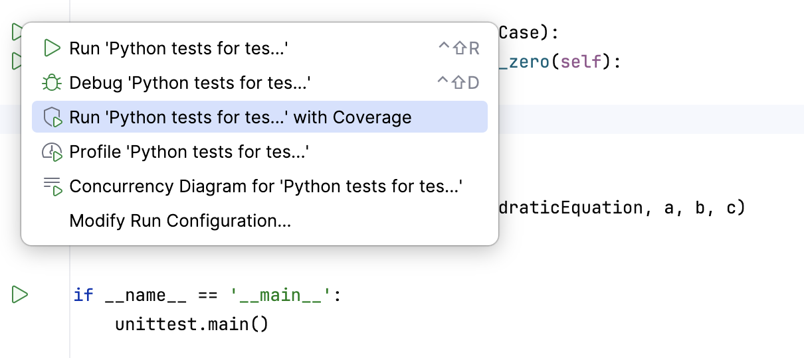
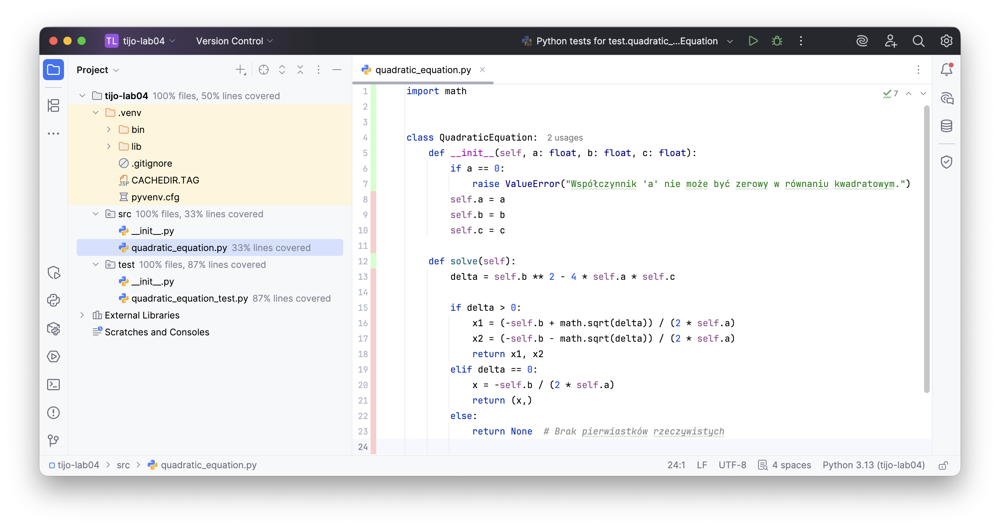

L#04: Pokrycie kodu testami.
Pokrycie kodu testami (ang. code coverage) to mierzalna metryka stosowana w inżynierii oprogramowania, która określa, jaki procent linii kodu źródłowego został wykonany (skontrolowany) przez testy automatyczne. Narzędzia do mierzenia pokrycia kodu pomagają zidentyfikować obszary aplikacji, które nie są jeszcze chronione przed potencjalnymi błędami.
Głównym celem tego laboratorium jest poznanie technik analizy i zwiększania pokrycia kodu testami. Nauczymy się generować powiązane raporty w środowisku programistycznym (IDE) oraz interpretować ich wyniki. Wykonując ćwiczenia praktyczne postaramy się osiągnąć maksymalne (100%) pokrycie dla wybranych algorytmów.
Istnieje kilka rodzajów metryk oceniających pokrycie – można sprawdzać pokrycie linii (czy dana linijka została wykonana), jak i pokrycie rozgałęzień (czy sprawdzono wszystkie ścieżki warunków logicznych takich jak if/else). W naszym przypadku skupimy się na podstawowej analizie pokrycia bezpośrednio w IDE.
Utwórz nowy projekt w PyCharm i umieść w pakiecie produkcyjnym implementację klasy QuadraticEquation.
# Listing 1
import math
class QuadraticEquation:
def __init__(self, a: float, b: float, c: float):
if a == 0:
raise ValueError("Współczynnik 'a' nie może być zerowy w równaniu kwadratowym.")
self.a = a
self.b = b
self.c = c
def solve(self):
delta = self.b ** 2 - 4 * self.a * self.c
if delta > 0:
x1 = (-self.b + math.sqrt(delta)) / (2 * self.a)
x2 = (-self.b - math.sqrt(delta)) / (2 * self.a)
return x1, x2
elif delta == 0:
x = -self.b / (2 * self.a)
return (x,)
else:
return None # Brak pierwiastków rzeczywistych
Umieść w pakiecie testowym implementację klasy TestQuadraticEquation.
# Listing 2
import unittest
from src.quadratic_equation import QuadraticEquation
class TestQuadraticEquation(unittest.TestCase):
def test_should_raise_error_when_a_is_zero(self):
# arrange
a, b, c = 0, 2, 4
# act & assert
self.assertRaises(ValueError, QuadraticEquation, a, b, c)
if __name__ == '__main__':
unittest.main()
Postaraj się uruchomić testy z raportem pokrycia kodu testami. Przejedź do skryptu z testami i kliknij w zieloną strzałkę (obok klasy) i wybierz opcję widoczną na poniższym rysunku.

Po uruchomieniu testów zwróć uwagę na statystyki pokrycia kodu w kodzie klasy QuadraticEquation. Kolor czerwony wskazuje linie, które nie zostały pokryte testami. Kolor zielony wskazuje linie, które zostały pokryte testami.

Mamy 33% pokrycia kodu testami. Dopisz pozostałe testy i zwiększ pokrycie kodu.
Twoje zadanie będzie polegało na implementacji operacji na bankomacie. Skorzystaj z przygotowanej poniżej struktury klasy (wraz z dokumentacją metod). Pamiętaj, aby pisać kod metodą TDD. Podczas implementacji i uruchamiania testów analizuj i badaj pokrycie kodu testami.
Dla każdego cyklu stosuj odpowiednią strukturę commiów, np.:
Kod początkowy (atm.py):
# Listing 3
class ATM:
"""
Klasa reprezentująca bankomat (ATM) z podstawowymi operacjami bankowymi.
"""
def __init__(self, pin: int, initial_balance: float = 0.0):
"""
Inicjalizuje bankomat z podanym saldem początkowym.
:param initial_balance: Saldo początkowe konta.
:raises ValueError: Jeśli saldo początkowe jest ujemne.
"""
pass
def check_balance(self, pin: int) -> float:
"""
Sprawdza saldo konta użytkownika.
:param pin: PIN użytkownika.
:return: Saldo konta użytkownika.
:raises InvalidPinException: Jeśli podany PIN jest nieprawidłowy.
"""
pass
def deposit(self, pin: int, amount: float) -> float:
"""
Wpłaca środki na konto użytkownika.
:param pin: PIN użytkownika.
:param amount: Kwota do wpłacenia.
:return: Aktualne saldo po wpłacie.
:raises InvalidPinException: Jeśli podany PIN jest nieprawidłowy.
"""
pass
def withdraw(self, pin: int, amount: float) -> float:
"""
Wypłaca środki z konta użytkownika.
:param pin: PIN użytkownika.
:param amount: Kwota do wypłacenia.
:return: Aktualne saldo po wypłacie.
:raises InsufficientFundsException: Jeśli saldo jest niewystarczające.
:raises InvalidPinException: Jeśli podany PIN jest nieprawidłowy.
"""
pass
Dążenie do wysokiego stopnia pokrycia kodu testami zwiększa jakość całego systemu informatycznego. Warto jednak pamiętać, że nawet 100% pokrycia nie gwarantuje całkowicie bezbłędnej aplikacji. W teście liczy się jakość asercji, a sama metryka służy jedynie jako wsparcie i nawigacja pomagająca odnaleźć obszary, które testy automatyczne jeszcze nie pokryły.
Strona główna